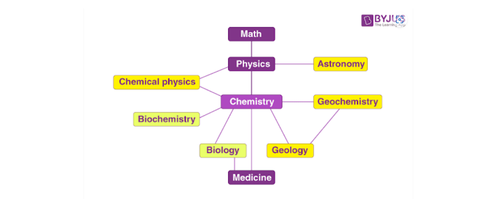

Man has been exposed to changing surroundings ever since he came into existence.
He has been quite interested in learning about his surroundings and studying and explaining the things that are happening around him.
He has conducted experiments and observations to gather information as a result of his interest.
Through the decades, it has also been in charge of many people’s research endeavours around the globe.
Systematizing and organising the knowledge acquired in this way was absolutely necessary for the good of humanity
Science is the name given to this knowledge. So, systematised knowledge that humans have acquired through observations and experimentation may be referred to as science.
Due to its vast expansion and variety of subjects, science has been further divided into many branches.
One of the most significant fields of science is chemistry.
Chemistry can be summed up as the area of science that studies matter, including its properties, composition, and the changes that occur to it as a result of various activities.
Several branches of chemistry have been created based on the specialised disciplines of research.
Table of Content
What is Chemistry?
Chemistry is a subdiscipline of science that deals with the study of matter and the substances that constitute it.
It also deals with the properties of these substances and the reactions undergone by them to form new substances.
Chemistry primarily focuses on atoms, ions, and molecules which, in turn, make up elements and compounds.
These chemical species tend to interact with each other through chemical bonds.
It is important to note that the interactions between matter and energy are also studied in the field of chemistry.
The study of elements and compounds’ properties, compositions, and structures, as well as how they can change and the energy that is released or absorbed during such changes, is the subject matter of the science known as chemistry.
Learn more on Interactive Periodic Table
Relationship Between Chemistry and Other Branches of Science
‘Science’ can be defined as the systematic study of the natural universe, its structure, and everything it encompasses.
Due to the immensity of the natural universe, science has been divided into several disciplines that deal with certain aspects of the universe.
The three primary subcategories of science under which these disciplines can be grouped are:
- The Formal Sciences:Involves the study of the language disciplines that concern formal systems.
Examples of scientific disciplines that fall under this category include logic and mathematics. Can be thought of as the “language of science”.
- The Natural Sciences: Involves the study of natural phenomena through experiments and observations. Chemistry, physics, and biology fall under this category of science.
- The Social Sciences: Involves the study of human societies and the relationships between the humans that dwell in these societies. Examples of scientific disciplines that fall under this category include psychology, sociology, and economics.
When the relationships between the major branches of science are considered, chemistry is found to lie close to the centre (as illustrated below).

Thus, chemistry can be viewed as a central science whose roots bore into several other subdisciplines of science.
Branches of Chemistry
The five primary branches of chemistry are physical chemistry, organic chemistry, inorganic chemistry, analytical chemistry, and biochemistry. Follow the buttons provided below to learn more about each individual branch.